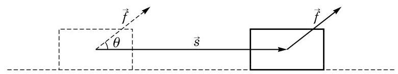
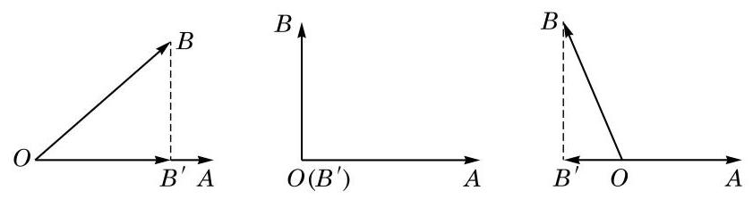
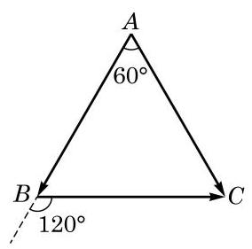

例题 01
例 1 已知向量 与 的夹角为 ,且 . 求 在 方向上的投影与数量投影.
学生阅读版 / 沪教版高中数学
从投影出发，连接方向与数量。
用数量积刻画模、夹角和垂直关系。
投影是向量，数量投影是有正负的实数
在物理课中，我们学过“功”的概念. 一个物体在外力作用下产生位移, 外力所做的功是这个力在位移方向上的分力大小与位移量的乘积. 如果力 和位移 如图 8-2-1 所示，那么力 所做的功是 ,其中 表示力 的方向与物体位移 的方向之间的夹角, 是 在位移方向上的分力的大小.

图 8-2-1
如上所述, “功”这个数量完全被力和位移这两个向量所决定, 如何从这一具体事例抽象出对任意两个向量定义的一种数学运算呢?
我们再试着理解功的定义和功的计算公式的推导, 看能得到什么启示.
功并不是把力的大小和位移向量的大小直接相乘而得到, 而是把作用力在位移方向上的分力大小乘物体位移量. “在位移方向上的分力”是作用力 在位移向量 方向上的投影 (图 8-2-2). 这就引出了向量在一条直线或另一个向量方向上的投影的概念.

图 8-2-2
平面上一点 在直线 上的投影就是过点 作直线 的垂线而得到的垂足 .
功不是向量, 而是一个数量.

图 8-2-3
我们现在讨论 在 的方向上的投影与向量 的关系. 我们先设 .
为了行文简洁, 有时也常常用一个希腊字母(如 )来指代向量的夹角.

图 8-2-4
由投影的定义立即得知, 零向量在任何非零向量方向上的投影是零向量, 而相应的数量投影的绝对值是该投影的模, 因此, 这个数量投影等于 0 .
例 1 已知向量 与 的夹角为 ,且 . 求 在 方向上的投影与数量投影.
例 2 已知 是非零向量, 与 是任意向量,它们在 方向上的投影分别为 与 . 求证: 在 方向上的投影为 .

图 8-2-5
(1) ； (2) ； (3) .
运算结果是实数；先核对运算类型，再迁移数的运算经验
数量积又称为标量积, 也称为内积 (inner product) 或点积 (dot product). 记号 中间的“ ”不可以省略, 也不可以用 “✗”代替·
即 是 的模 的模 与 夹角 的余弦的乘积.
在这个公式中, 就是 在 方向上的数量投影,而 就是 在 方向上的数量投影.
我们约定可以把 简记为 ,它其实就是 .
例 3 如图 8-2-6,给定边长为 6 的正三角形 . 求 和 .

图 8-2-6
证明(1)因为 ，所以结论是显然的.
(2)如果 和 有一个是零向量，或者 ，那么结论是显然的,从而不妨设 和 都是非零向量,且 . 若 ,则 ; 若 ,则 , ,两种情况代入数量积定义公式,都得到
再利用向量数量积的交换律,就得到 .
(3)如果 ，那么结论是显然的，从而不妨设 . 把 、 和 在 的方向作投影，根据向量和的投影等于它们投影的和，就得到
由于数量积的交换律和分配律与数的乘法类似, 容易证明如下的公式.
例 4 证明:
(1) ;
(2) .
由(1)类似可证: .
在 8.3 节中我们将利用向量的坐标 (从而不通过向量的夹角) 直接来计算向量的数量积, 而上面的公式就提供了计算向量夹角的有效方法.
例 5 设向量 满足 . 求 .
例 6 已知 . 求 .
(1)设向量 满足 ，则 ___；
(2)设向量 、 满足 ， ， ，则 ___.
保留教材A、B组及小问顺序，不另行分级或改编
(1) ；
(2) .
(1)求 ；
(2)设 ，求 .
(1) ；
(2) .